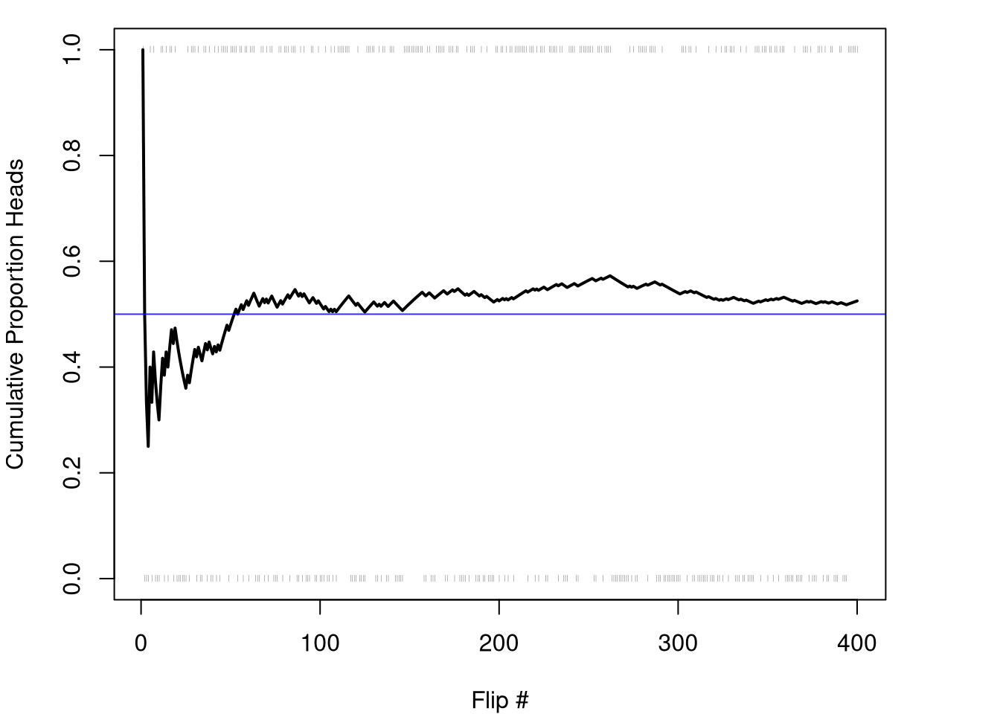
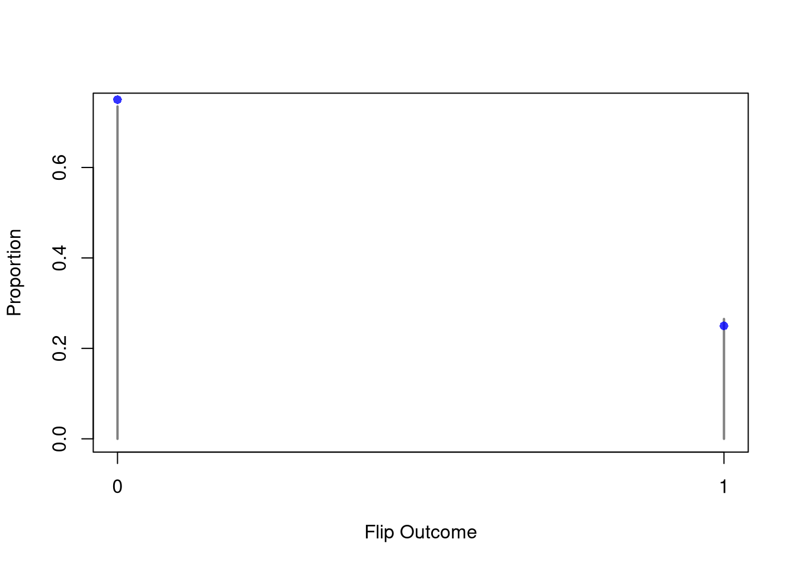
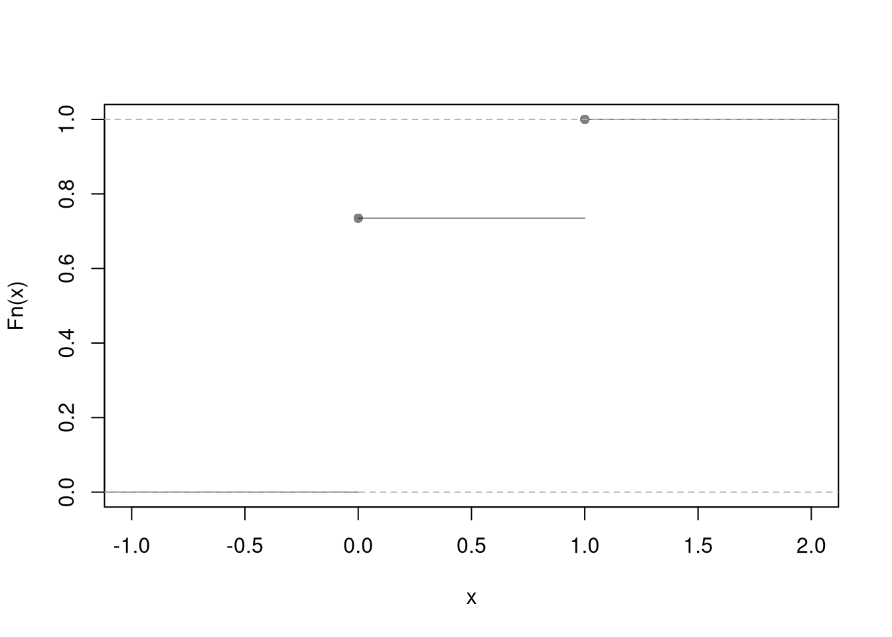
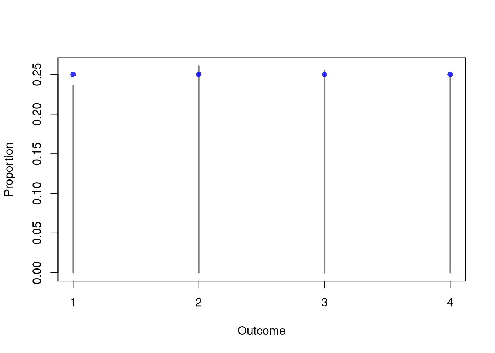
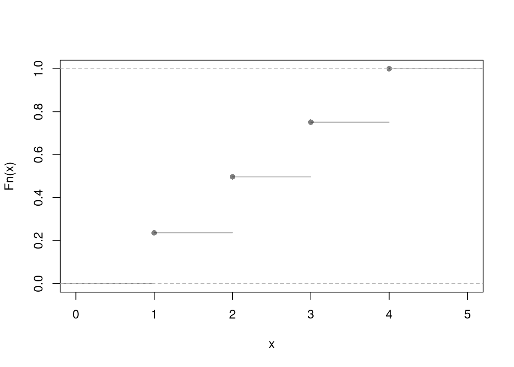
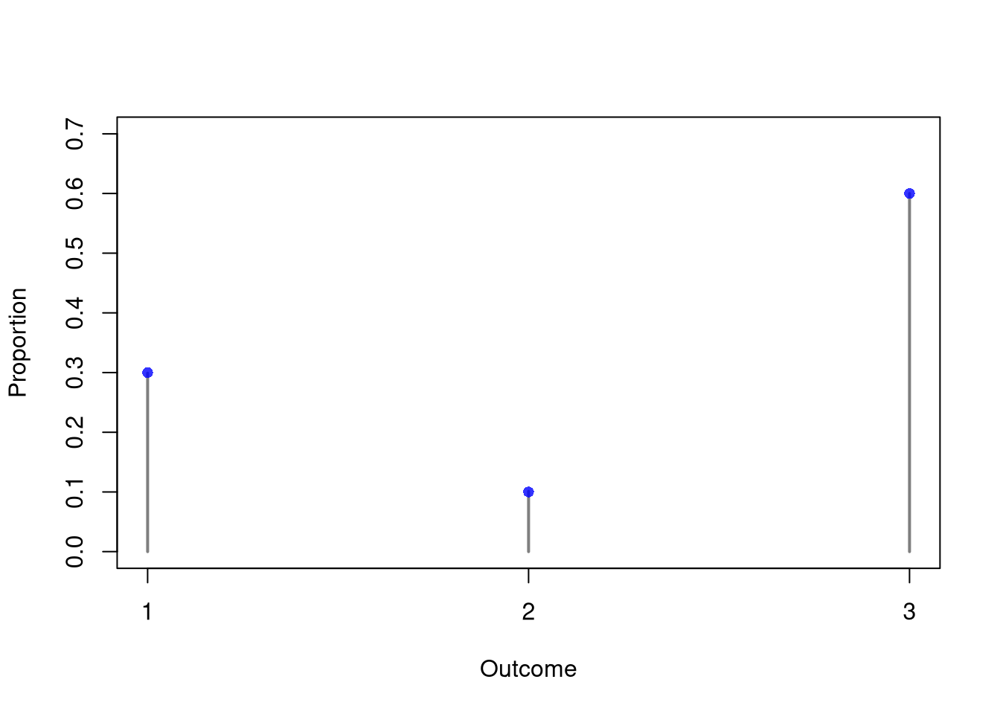
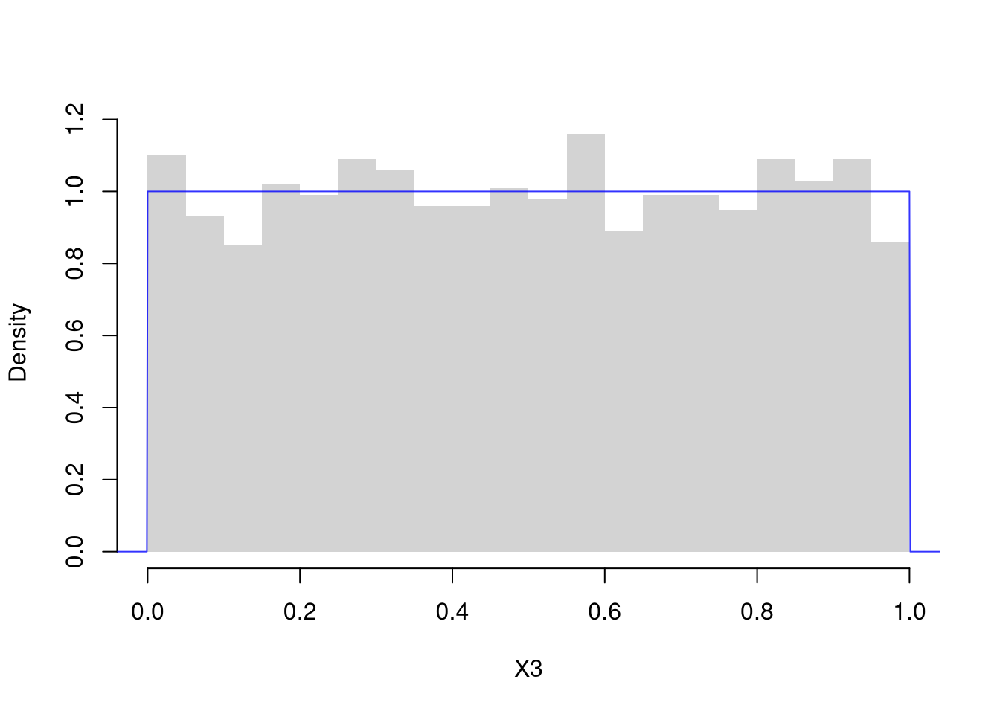
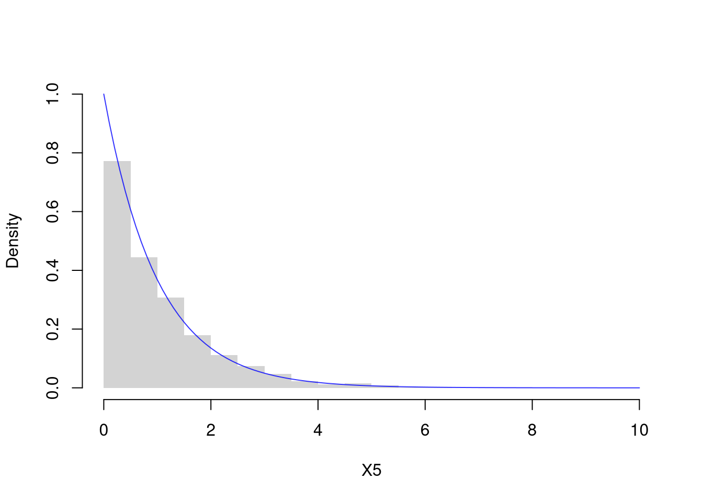
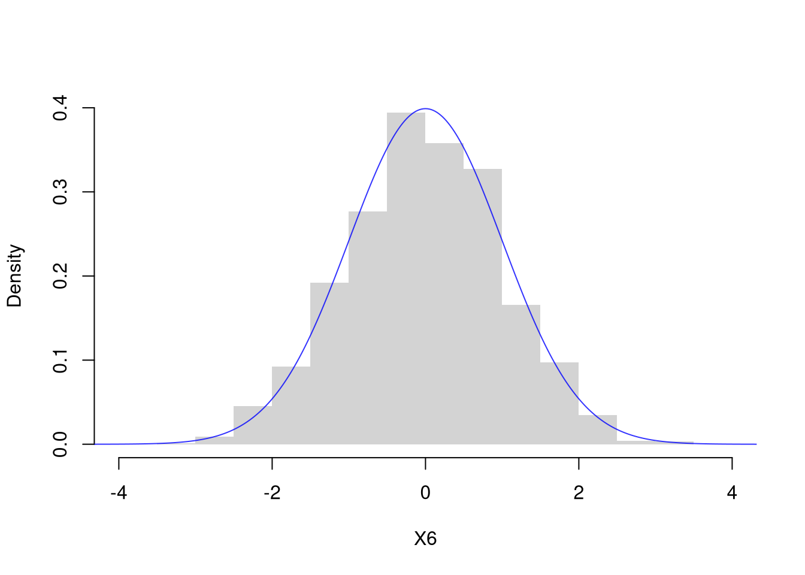

4 Random Variables
Previously, we computed a distribution given the data, whereas now we generate individual data points given the distribution. This chapter introduces random variables and the two basic kinds of sample space (discrete and continuous), along with the most common distributions in each family.
To talk about data we have not yet observed, we need an object that names the set of possible outcomes and the long-run frequency of each.
The random-variable framing is useful for reasoning about a data generating process before any data are observed. For example, consider flipping a coin before knowing whether it lands on heads or tails: we denote the unflipped coin as the random variable \(X_{i}\), with sample space \(\{0, 1\}\) (\(x=1\) is heads, \(x=0\) is tails) and probability \(1/2\) on each outcome. A specific flipped coin that has landed heads or tails is denoted \(\hat{X}_{i}\), mirroring the hat notation from the previous chapter.
There are two basic types of sample spaces: discrete (encompassing cardinal-discrete, factor-ordered, and factor-unordered data) and continuous. This leads to two types of random variables: discrete and continuous. However, each type has many different probability distributions.
Cumulative Probability.
The first job of any random-variable description is to assign a probability to events of the form “the value falls at or below \(x\)”.
The CDF is useful because it packages every probability of interest into a single function: \(Prob(X_{i} > x) = 1 - F(x)\), \(Prob(a < X_{i} \leq b) = F(b) - F(a)\), and so on. You can think of \(F(x)\) as the ECDF for a dataset with an infinite number of observations; equivalently, the ECDF is an empirical version of the CDF applied to observed data. The most common random variables in R are easily accessible through their CDFs.
Probability Rules.
After introducing different random variables, we will also cover some basic implications of their CDF. Intuitively, probabilities must sum up to one. So we can compute \(Prob(X_{i} > x) = 1- F(x)\). We also have two “in” and “out” probabilities.
The probability of \(X_{i}\leq b\) and \(X_{i}> a\) can be written in terms of falling into a range \(Prob(X_{i} \in (a,b])=Prob(a < X_{i} \leq b) = F(b) - F(a)\).
The opposite probability of \(X_{i} > b\) or \(X_{i} \leq a\) is \(Prob(X_{i} \leq a \text{ or } X_{i} > b) = F(a) + [1- F(b)]\). Notice that this opposite probability \(F(a) + [1- F(b)] =1 - [F(b) - F(a)]\), so that \(Prob(X_{i} \text{ out of } (a,b]) = 1 - Prob( X_{i} \in (a,b])\). Each of these rules is applied to concrete numbers in the four-sided-die example below.
4.1 Discrete Random Variables
A discrete random variable can take one of several values in a set. E.g., any number in \(\{1,2,3,...\}\) or any letter in \(\{A,B,C,...\}\). Theoretical proportions are referred to as a probability mass function, which can be thought of as a proportions bar plot for an infinitely large dataset. Equivalently, the bar plot is an empirical version of the probability mass function that is applied to observed data. The CDF accumulates the mass function, \(F(x)=\sum_{x' \leq x} Prob(X_{i}=x')\), and conversely the probability of any value is the size of the jump in \(F\) at that value.
In R, you can simulate random discrete data using the sample function. To do so, you must specify each outcome \(x\) and its probability \(Prob(X_{i}=x)\).
Bernoulli.
The simplest random variable models a single yes/no event, like one flip of a coin.
Bernoulli variables are useful whenever an outcome is binary (heads or tails, success or failure, present or absent), and are also the building block from which richer discrete distributions are assembled out of independent yes/no events. Writing the distribution out in full helps fix the notation we will reuse for richer cases: \[\begin{eqnarray} X_{i} &\in& \{0,1\} \\ Prob(X_{i} =0) &=& 1-p \\ Prob(X_{i} =1) &=& p \\ F(x) &=& \begin{cases} 0 & x<0 \\ 1-p & x \in [0,1) \\ 1 & x\geq 1 \end{cases} \end{eqnarray}\]
The theoretical mean of a Bernoulli variable works out to \(p\), as derived in Population Statistics.
Here is an example of the Bernoulli distribution. While you might get all heads (or all tails) in the first few coin flips, the ratios level out to their theoretical values after many flips.
Code
x <- c(0, 1)
x_probs <- c(3/4, 1/4)
sample(x, 1, prob=x_probs, replace=TRUE) # 1 Flip
## [1] 0
sample(x, 4, prob=x_probs, replace=TRUE) # 4 Flips
## [1] 0 0 0 0
X0 <- sample(x, 400, prob=x_probs, replace=TRUE)
# Plot proportions
proportions <- table(X0)/length(X0)
plot(proportions,
col=grey(0, 0.5),
xlab='Flip Outcome',
ylab='Proportion',
main=NA)
points(c(0, 1), c(.75, .25), pch=16, col=rgb(0, 0, 1, .8)) # Theoretical values
Code
# Plot CDF
plot( ecdf(X0), col=grey(0, .5),
pch=16, main=NA) #Empirical
Code
#points(c(0, 1), c(.75, 1), pch=16, col='blue') # TheoreticalDiscrete Uniform.
Discrete numbers with equal probability, such as a die with \(K\) sides. \[\begin{eqnarray} X_{i} &\in& \{1,...K\} \\ Prob(X_{i} =1) &=& Prob(X_{i} =2) = ... = 1/K\\ F(x) &=& \begin{cases} 0 & x<1 \\ 1/K & x \in [1,2) \\ 2/K & x \in [2,3) \\ \vdots & \\ 1 & x\geq K \end{cases} \end{eqnarray}\]
Code
x <- c(1, 2, 3, 4)
x_probs <- c(1/4, 1/4, 1/4, 1/4)
# sample(x, 1, prob=x_probs, replace=T) # 1 roll
X1 <- sample(x, 2000, prob=x_probs, replace=TRUE) # 2000 rolls
# Plot Long run proportions
proportions <- table(X1)/length(X1)
plot(proportions, col=grey(0, .5),
xlab='Outcome', ylab='Proportion', main=NA)
points(x, x_probs, pch=16, col=rgb(0, 0, 1, .8)) # Theoretical values
Code
# Hist w/ Theoretical Counts
# hist(X1, breaks=50, border=NA, main=NA, ylab='Count')
# points(x, x_probs*length(X1), pch='-')
# Alternative Plot
plot( ecdf(X1), pch=16, col=grey(0, .5), main=NA)
Code
# Alternative Plot 2
#props <- table(X1)
#barplot(props, ylim = c(0, 0.35), ylab = 'Proportion', xlab = 'Value')
#abline(h = 1/4, lty = 2)Note that the Discrete Uniform distribution generalizes to arbitrary sets, such as \(\{0.0, 0.25, 0.5, 0.75, 1.0\}\) instead of \(\{1,2,3,4,5\}\). We will not exploit the generalization in this class.
Multinoulli.
Numbers \(1,...K\) with unequal probabilities. \[\begin{eqnarray} X_{i} &\in& \{1,...K\} \\ Prob(X_{i} =1) &=& p_{1} \\ Prob(X_{i} =2) &=& p_{2} \\ &\vdots& \\ p_{1} + p_{2} + ... &=& 1\\ F(x) &=& \begin{cases} 0 & x<1 \\ p_{1} & x \in [1,2) \\ p_{1} + p_{2} & x \in [2,3) \\ \vdots & \\ 1 & x\geq K \end{cases} \end{eqnarray}\]
Here is an empirical example with three outcomes
Code
x <- c(1, 2, 3)
x_probs <- c(3/10, 1/10, 6/10)
sum(x_probs)
## [1] 1
X2 <- sample(x, 2000, prob=x_probs, replace=TRUE) # sample of 2000
# Plot Long run proportions
proportions <- table(X2)/length(X2)
plot(proportions, col=grey(0, .5), ylim=c(0, 0.7),
xlab='Outcome', ylab='Proportion', main=NA)
points(seq(x), x_probs, pch=16, col=rgb(0, 0, 1, .8)) # Theoretical values
Code
# Histogram version
# X2_alt <- X1
# X2_alt[X2_alt=='A'] <- 1
#X2_alt[X2_alt=='B'] <- 2
#X2_alt[X2_alt=='C'] <- 3
#X2_alt <- as.numeric(X1_alt)
#hist(X2_alt, breaks=50, border=NA,
# main=NA, ylab='Count')
#points(x, x_probs*length(X2_alt), pch=16) ## Theoretical Counts
# Alternative Plot
# plot( ecdf(X2), pch=16, col=grey(0, .5), main=NA)We can also replace numbers with letters \((A,...Z)\) or names \((John, Jamie, ...)\) although we must be careful with the CDF when there is no longer a natural ordering. When the outcomes are not cardinal data, the Multinoulli random variable is typically referred to as a Categorical random variable. The CDF \(F(x)=Prob(X_{i} \leq x)\) requires an ordering on the outcomes, and with labels like “my car dies” and “it rains next Tuesday”, you do not have any inherent order and the CDF is an arbitrary artifact.
4.2 Continuous Random Variables
A continuous random variable can take one value out of an uncountably infinite number. E.g., any number between \(0\) and \(1\) with any number of decimal points. With a continuous random variable, the probability of any individual point is zero, so we cannot describe the distribution by listing \(Prob(X_{i} = x)\) for each \(x\); instead, we describe it with the CDF or with a density.
The PDF is useful for intuition: probabilities are pictured as areas, peaks of \(f\) mark where outcomes are likely, and the shape of \(f\) tells you whether the distribution is symmetric, skewed, or heavy-tailed. The CDF is the workhorse for numerical calculation, since \(F(x)\) already encodes the cumulative area under \(f\) from \(-\infty\) to \(x\): where \(F\) rises steeply \(f\) is large, and where \(F\) is flat \(f\) is near zero. Just as \(F\) can be thought of as the ECDF \(\hat{F}\) with an infinite amount of data, \(f\) can be thought of as a histogram \(\hat{f}\) with an infinite amount of data; equivalently, the histogram is an empirical version of the PDF applied to observed data.
In R, you work with continuous distributions using these functions
dXXXdensity, \(f(x)\) for particular values \(x\)pXXXdistribution, \(F(x)\) for particular values \(x\)rXXXgenerate random variables according to the distribution
where XXX is the distribution name (unif, exp, norm)
Continuous Uniform.
The simplest continuous distribution is the one with no preferred region: every value in an interval is equally likely.
The continuous uniform is useful as a reference distribution: a flat density makes it a natural “no information” baseline, and R’s runif is the foundation underlying many other random-number routines. The full specification gathers sample space, density, and cumulative function in one place: \[\begin{eqnarray}
X_{i} &\in& [a,b] \\
f(x) &=& \begin{cases}
1/(b-a) & x \in [a,b] \\
0 & \text{Otherwise}
\end{cases}\\
F(x) &=& \begin{cases}
0 & x < a \\
(x-a)/(b-a) & x \in [a,b] \\
1 & x > b.
\end{cases}
\end{eqnarray}\]
Code
runif(3) # 3 draws
## [1] 0.3855235 0.2841507 0.5260113
# Empirical Density
X3 <- runif(2000)
hist(X3, breaks=20, border=NA, main=NA, freq=FALSE)
# Theoretical Density
x <- seq(-0.1, 1.1, by=.001)
fx <- dunif(x)
lines(x, fx, col=rgb(0, 0, 1, .8))
Code
# CDF example 1
P_low <- punif(0.25)
P_low
## [1] 0.25
# Uncomment to show via PDF
# x_low <- seq(0, 0.25, by=.001)
# fx_low <- dunif(x_low)
# polygon( c(x_low, rev(x_low)), c(fx_low, fx_low*0),
# col=rgb(0, 0, 1, .25), border=NA)
# CDF example 2
P_high <- 1-punif(0.25)
P_high
## [1] 0.75
# Uncomment to show via PDF
# x_high <- seq(0.25, 1, by=.001)
# fx_high <- dunif(x_high)
# polygon( c(x_high, rev(x_high)), c(fx_high, fx_high*0),
# col=rgb(0, 0, 1, .25), border=NA)
# CDF example 3
P_mid <- punif(0.75) - punif(0.25)
P_mid
## [1] 0.5
# Uncomment to show via PDF
# x_mid <- seq(0.25, 0.75, by=.001)
# fx_mid <- dunif(x_mid)
# polygon( c(x_mid, rev(x_mid)), c(fx_mid, fx_mid*0),
# col=rgb(0, 0, 1, .25), border=NA)Note that the Continuous Uniform distribution generalizes to an arbitrary interval, \(X_{i} \in [a,b]\). In this case, \(f(x)=1/[b-a]\) if \(x \in [a,b]\) and \(F(x)=[x-a]/[b-a]\) if \(x \in [a,b]\).
Exponential.
The sample space is any positive number.2 An Exponential random variable has a single rate parameter, \(\lambda>0\). \[\begin{eqnarray} X_{i} &\in& [0,\infty) \\ f(x) &=& \lambda exp\left\{ -\lambda x \right\} \\ F(x) &=& \begin{cases} 0 & x < 0 \\ 1- exp\left\{ -\lambda x \right\} & x \geq 0. \end{cases} \end{eqnarray}\]
Code
rexp(3) # 3 draws
## [1] 0.08445756 0.12955208 0.32941385
X5 <- rexp(2000)
hist(X5, breaks=20,
border=NA, main=NA,
freq=FALSE, ylim=c(0, 1), xlim=c(0, 10))
x <- seq(0, 10, by=.1)
fx <- dexp(x)
lines(x, fx, col=rgb(0, 0, 1, .8))
Normal (Gaussian).
For continuous data spread symmetrically around a center, the default model is the bell curve.
The Normal is useful as the default model for measurements that cluster around a typical value with symmetric scatter (heights, test scores, measurement errors), and is sometimes called the Gaussian distribution. We call it “Normal” because it appears again and again, both as a description of real data and as the limiting shape for sample averages. The full PDF spells out the parameters \(\mu \in (-\infty,\infty)\) and \(\sigma > 0\): \[\begin{eqnarray} X_{i} &\in& (-\infty,\infty) \\ f(x) &=& \frac{1}{\sqrt{2\pi \sigma^2}} exp\left\{ \frac{-(x-\mu)^2}{2\sigma^2} \right\} \end{eqnarray}\]
Despite the complicated formula, the shape is simple: a bell centered at \(\mu\), with most of the probability within a few multiples of \(\sigma\) on either side.
Code
rnorm(3) # 3 draws
## [1] -1.407243 -1.371206 0.418476
X6 <- rnorm(2000)
hist(X6, breaks=20,
border=NA, main=NA,
freq=FALSE, ylim=c(0, .4), xlim=c(-4, 4))
x <- seq(-10, 10, by=.025)
fx <- dnorm(x)
lines(x, fx, col=rgb(0, 0, 1, .8))
Even thought the distribution function is complex, we can compute CDF values using the computer.
Code
pnorm( c(-1.645, 1.645) ) # 10%
## [1] 0.04998491 0.95001509
pnorm( c(-2.576, 2.576) ) # 1%
## [1] 0.004997532 0.9950024684.3 Exercises
Comment the script you wrote for this chapter, then restart R and check that it runs from a clean session, then check the script with AI as explained in Working with AI. Write three sentences from memory on the main statistical idea of this chapter, and ask the assistant what is wrong, vague, or missing. Finish with your own questions about whatever you found hardest.
A Multinoulli random variable has outcomes \(\{1,2,3,4\}\) with probabilities \(\{0.1, 0.3, 0.4, 0.2\}\). Using the CDF, compute \(Prob(X_{i} \leq 2)\), \(Prob(X_{i} > 3)\), and \(Prob(1 < X_{i} \leq 3)\). Show your work.
Suppose \(X_{i}\) is normally distributed with \(\mu=10\) and \(\sigma=4\). Using
pnorm, compute the probability that \(X_{i}\) falls between \(6\) and \(14\). Then compute the probability that \(X_{i}\) is more than two standard deviations away from the mean, i.e., \(Prob(X_{i} < 2 \text{ or } X_{i} > 18)\).In R, generate \(2000\) draws from an exponential distribution with \(\lambda=0.5\) using
rexp(2000, rate=0.5). Plot a histogram withfreq=FALSEand overlay the theoretical density usinglinesanddexp. Then usepexpto compute the exact probability that a draw exceeds \(4\).
Further Reading.
Many random variables are related to each other. Also note that numbers randomly generated on your computer cannot be truly random, they are “pseudorandom.”
- https://en.wikipedia.org/wiki/Relationships_among_probability_distributions – Overview of how common distributions (Normal, Chi-squared, Exponential, etc.) connect to each other.
- https://www.math.wm.edu/~leemis/chart/UDR/UDR.html – Interactive chart showing transformations and limiting relationships among univariate distributions.
- https://learningstatisticswithr.com/book/probability.html – Introduction to probability distributions with worked R examples.
Recall
This chapter introduced random variables and distinguished discrete families (Bernoulli, Uniform, Multinoulli) from continuous families (Uniform, Exponential, Normal), describing each through the CDF \(F(x)=Prob(X_{i} \leq x)\) and (for continuous variables) the PDF \(f(x)\). The four-sided die example tied the CDF rules together: with \(Prob(X_{i} \leq 3) = 3/4\), the right-tail probability is \(Prob(X_{i} > 3) = 1/4\), the in-interval probability is \(Prob(1 < X_{i} \leq 3) = 3/4 - 1/4 = 2/4\), and the out-of-interval probability is \(Prob(X_{i} \leq 1 \text{ or } X_{i} > 3) = 1/4 + 1/4 = 2/4\). In the next chapter we draw repeated samples from these distributions and ask how the resulting statistics behave from sample to sample.
This is the general formula using CDFs, and you can verify it works in this instance by directly adding the probability of each 2 or 3 event: \(Prob(X_{i} = 2) + Prob(X_{i} = 3) = 1/4 + 1/4 = 2/4\).↩︎
In other classes, you may further distinguish types of random variables based on whether their maximum value is theoretically finite or infinite.↩︎